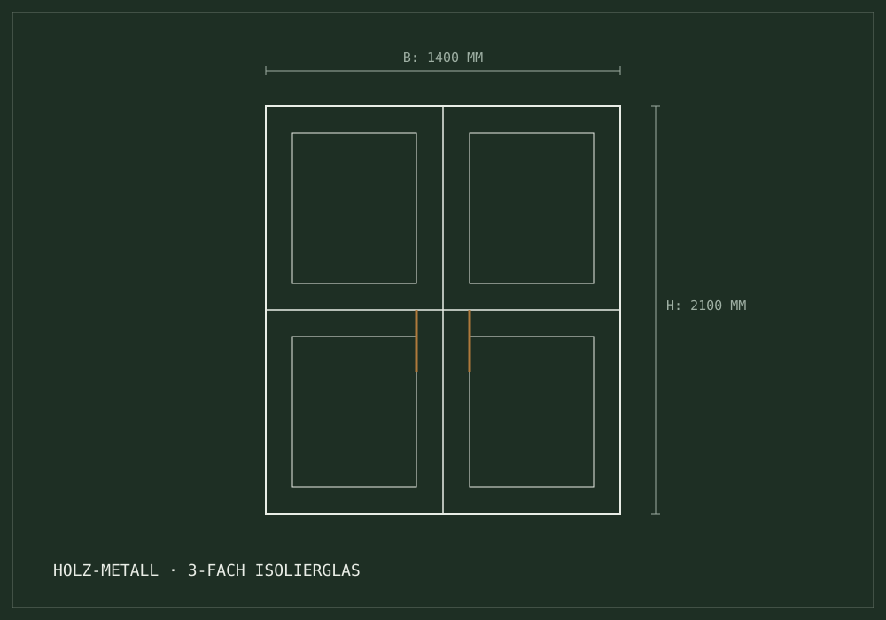
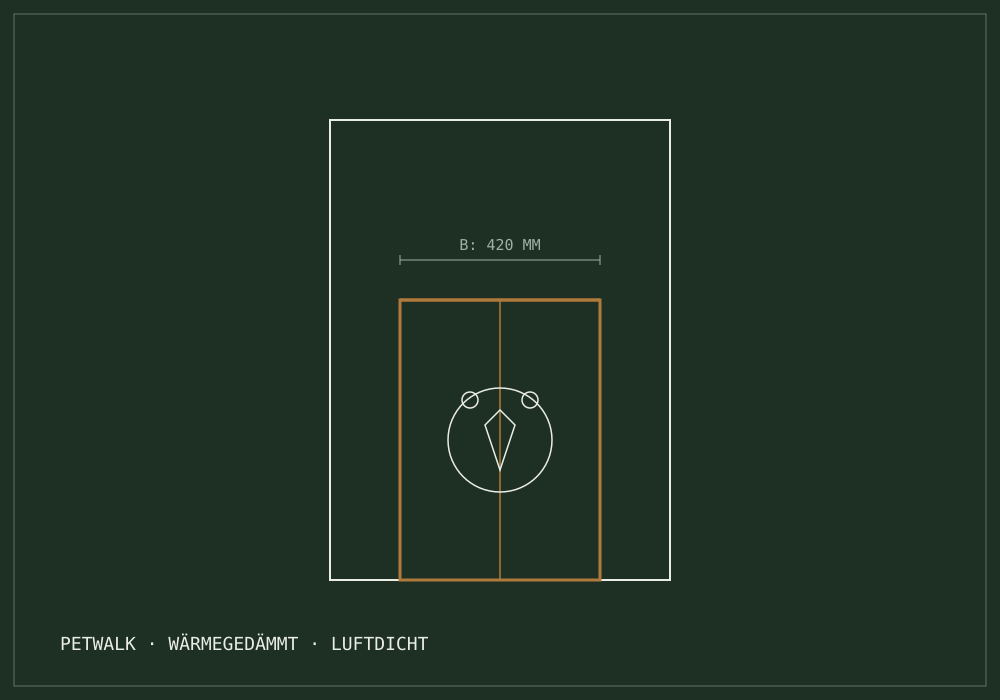

Werkstatt-Bereich 03 // Fenster & Türen
Fenster, Haustüren
& Dämmung.
Energieeffiziente Fenstersanierungen, denkmalgerechter Originalnachbau und massgefertigte Haustüren im Berner Mittelland — gefertigt nach Schweizer Norm, montiert ohne Kompromisse.

Leistungsspektrum Fertigung
Massgefertigte Systeme nach Schweizer Norm
Holz- & Holz-Metall-Fenster
Neubau und energetische Sanierung. Wir fertigen wetterfeste Holz-Metall-Konstruktionen für moderne Bauten und denkmalgeschützte Objekte.
- Denkmalpflegerische Nachbauten
- 3-fach Isolierglas
- Geprüfter Einbruchschutz
- Schweizer Lärche, Föhre & Eiche
Toleranz: < 0.5 mm // Werkstattfreigabe
Haustüren nach Mass
Individuell geplante Eingangstüren, die architektonischen Charakter mit kompromissloser Sicherheit verbinden.
- Motorische Mehrfachverriegelungen
- Thermisch getrennte Bodenschwellen
- Biometrische Zutrittssysteme (Fingerprint)
- Extremer Witterungsschutz mit Dickschichtlasur
Schwelle: barrierefrei
Innentüren & Zargentausch
Vom staubarmen Austausch alter Futterrahmen bis zu wandbündigen Blockfuttertüren und raumhohen Schiebetüren.
- Verdeckt liegende Bandsysteme
- In der Wand laufende Schiebetüren
- Passgenauer Austausch ohne Mauerwerksbeschädigung
Passung: reine Atelier-Anpassung
Eiche · Lärche · Tanne
Wir arbeiten mit bewährten, regional verarbeiteten Holzarten — ausgewählt nach Lage, Belastung und Denkmalschutz-Vorgabe.
Offiziell zertifiziert seit vielen Jahren
Petwalk Kompetenzzentrum Bern & Mittelland
Hochwärmegedämmt · Luftdicht · Passivhaustauglich
Die erste echte Premium-Tiertüre für moderne Gebäudehüllen.
Klassische Katzenklappen ruinieren die Wärmedämmung und stellen ein Einbruchsrisiko dar. Als offizieller Petwalk-Partner bauen wir die wärmegedämmte Tiertüre fachgerecht ein — dicht, sicher und fast lautlos.
Keine Kältebrücke
Mehrfaches Dichtungssystem gegen Zugluft, Schlagregen und Kondenswasser.
Einbruchsicherheit
Robuste Mehrpunktverriegelung mit massivem Bolzenverschluss.
RFID & Chip-Steuerung
Öffnet berührungslos nur für das eigene Tier — über implantierten Tierchip oder Halsbandanhänger.
Schalldämmung nach Mass
Effektive Schallschutzdämmung hält Strassen- und Umgebungslärm draussen. Flüsterleise Mechanik.

Einbauvarianten aus unserer Werkstatt
- In 3-fach Isolierglas (Fenster / Schiebetür)
- In Massivholztüren & Paneelen
- In Kernbohrung / Mauerwerk
Verifizierte Montage-Garantie — die Schreinerei Fritz Gfeller AG ist offiziell geschulter und autorisierter Petwalk-Einbaupartner.
Vor-Ort-Aufmass & Glasbestimmung
Wir prüfen Einbausituation, Glasaufbau und Chip-Kompatibilität direkt bei Ihnen.
Werkstatt-Vorbereitung & Kabelwege
Vorbereitung des Elements in Niederscherli, inklusive aller Kabel- und Dichtungswege.
Einbau, Prüfung & Chip-Anlernung
Schlüsselfertiger Einbau mit Schlagregenprüfung und Anlernung des Tierchips.
Ergänzende Gebäude-Ausstattung
Beschattung, Fensterläden & Insektenschutz
Präzise abgestimmte Systeme für sommerlichen Hitzeschutz und insektenfreie Wohnräume — ohne Beeinträchtigung der Optik.
Massgefertigte Fliegengitter & Rollos
Kein Wackeln, kein Durchhängen. Wir bauen passgenaue Insektenschutzrahmen, die sich harmonisch in die Fensterlaibung einfügen.
- Spannrahmen — ohne Bohren, für alle Holz- & Metallprofile
- Rollosysteme — vertikal oder quer, mit sanfter Dämpfung
- Schiebetüren — extrem verwindungssteif für grosse Terrassen
Spezialgewebe verfügbar: fast unsichtbares Klarsichtgewebe für maximalen Lichteinfall.
Holz- & Aluminium-Läden: Reparatur & Neubau
Traditionelle Berner Klappläden verleihen dem Haus Charakter. Wir reparieren bestehende Holzläden fachgerecht und fertigen Originalnachbauten.
- Restaurierung — Ablauge, Holzausbesserung & Neulackierung
- Originalnachbau — in Tanne, Lärche oder Eiche nach Denkmalschutz
- Beschläge — schmiedeeiserne Kloben & Rückhalter
Werkstatt-Tipp: Regelmässige Wartung der Kloben und Drehpunkte verhindert das Hängen der Läden und schützt vor Folgeschäden.
Verfahrensrichtlinie
Vom Vor-Ort-Aufmass zur schlüsselfertigen Montage
Bestandsaufnahme
Prüfung von Maueranschlüssen, Bauphysik, Taupunkt und Fenstersimsen direkt vor Ort durch den Schreinermeister.
Detailzeichnung
Erstellung der massgenauen Schnittzeichnungen mit exakten Glas- und Beschlagspezifikationen nach SIA-Norm.
Werkstatt-Fertigung
Präzisionszuschnitt, Hobeln, Fräsen von Dichtungsnuten und langlebige Oberflächenbehandlung in Niederscherli.
Saubere Montage
Demontage alter Elemente, staubarme Montage, normgerechte Dichtbänder und Entsorgung des Altmaterials.
Abnahme mit Inhaber
Persönliche Übergabe, Funktionsprüfung aller Flügel und Dichtungen — und ein Ansprechpartner, der erreichbar bleibt.
Offerte konfigurieren
Starten Sie direkt mit dem interaktiven Offerte-Assistenten. Masse, Materialwünsche und Fotos übermitteln — wir melden uns.
Interaktiver Vorprüfer
Millimeter-Dimensionierung für Ihr Element
Status: bereit zur Konfiguration. Stellen Sie Breite, Höhe und Elementtyp ein — die CAD-Schematik und die Fläche aktualisieren sich sofort.
600 mm Einzelflügel – 3600 mm Hebeschiebetür
800 mm Brüstungsfenster – 2800 mm Raumhoch
Elementtyp
Typ: Fenster · Richtwertprüfung: Präzisionsfertigung in eigener Werkstatt.
CAD-Schematik Voransicht 1400 × 2100 mm
Fläche: 2,94 m²
KI-unterstützte Anfrage // Schnell & massgenau
Starten Sie direkt mit unserem interaktiven Offerte-Assistenten. Übermitteln Sie Masse, Materialwünsche und Fotos.
- ✓ Unverbindliche Offertstellung
- ✓ Inklusive Beratungsgespräch vor Ort
- ✓ Schweizer Hochdeutsch («ss») garantiert
Anfrage in 60 Sekunden
Fenster- & Türen-Offerte konfigurieren?
Starten Sie direkt mit unserem interaktiven Offerte-Assistenten — oder rufen Sie an: Fritz Gfeller Burgunder berät Sie persönlich.